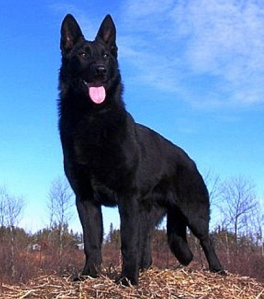

Немецкая овчарка, пожалуй, самая признанная и распространенная в мире порода. Благодаря своей способности к различным видам дрессировки, исключительному уму, чуткости и необыкновенной преданности хозяину более 90% всех служебных собак – представители породы.
Немецкие овчарки заслуженно считаются великолепными сторожами, поэтому их часто берут для охраны дома. Не редкость их содержание и в городской квартире, однако следует помнить, что животное нуждается в больших физических нагрузках и длительных прогулках. При отсутствии таковых питомец начинает чахнуть, теряет боевые качества